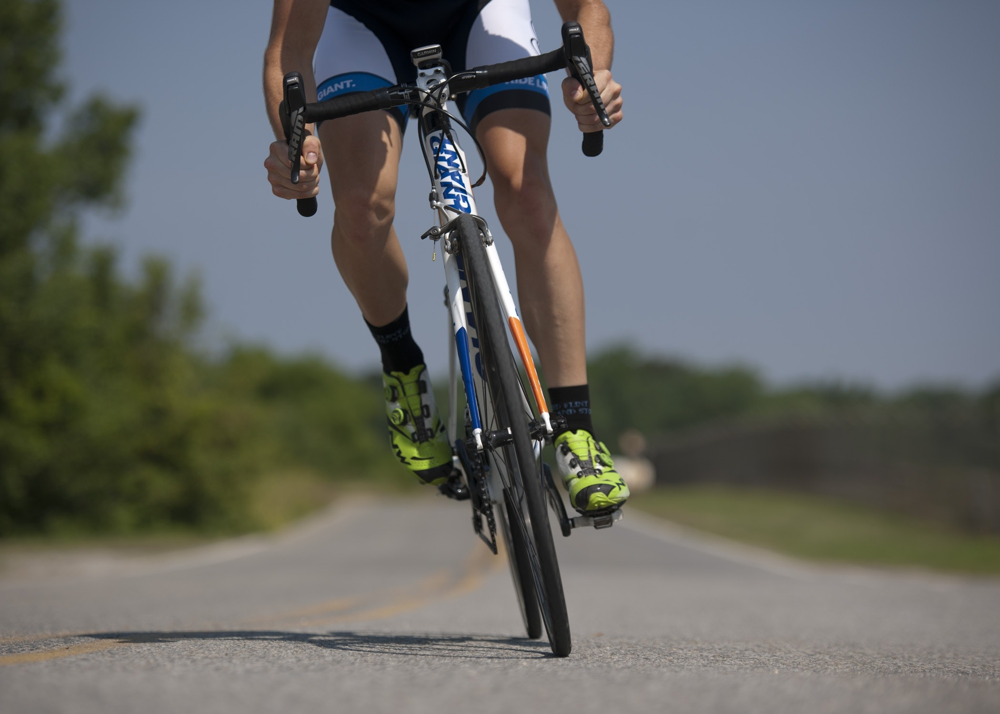

Her Gün Bisiklet Sürersek Ne Olur?
Yol bisikletleri, en yaygın bisiklet türlerinden biridir. Genellikle asfalt ve düzgün yollar için kullanıma uygundur.
Dağ vb. alanlar için kullanılması risk açısından tehlike barındırır ve kullanıma uygun değildir.
 Devamını OkuBisiklet Sürülecek En Güzel Rotalar
Bisiklet sürmek, aynı zamanda bir spor dalı olarak sayıldığı için bir sporla da uğraşıyor olarak sayılıyorsunuz. Ek
olarak düzenli olarak bisiklet sürmek, özellikle vücudunuzun sağlığı açısından çok önemli ve iyi yönde etkiler
oluşturur.
 Devamını Oku
Devamını Oku